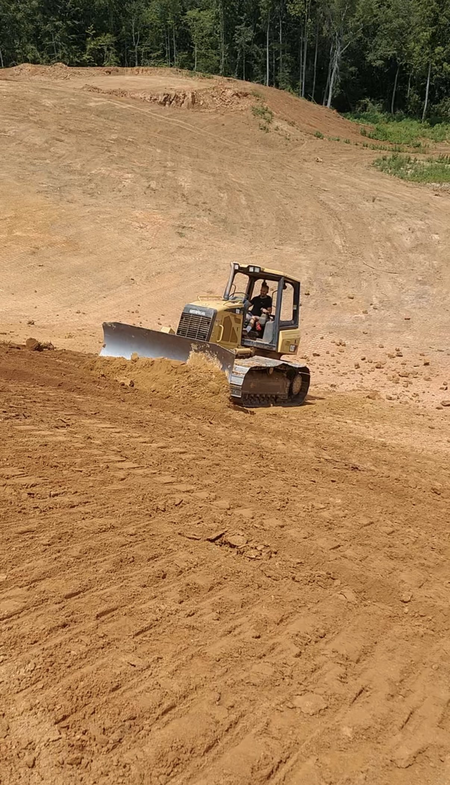

Grading Services
Land Clearing in North Georgia
Overgrown lot? New build site? ALLCON clears land across Dawsonville, Cumming, Gainesville, Buford, Alpharetta and all of North Georgia — brush, trees, stumps, and everything in between, with the grading to finish the job right. Call (678) 410-0310.

What We Clear
Land Clearing Services
- Full lot clearing for new construction
- Brush & underbrush removal
- Tree & stump removal
- Overgrown property reclamation
- Pasture & acreage clearing
- Clearing + grading + site prep in one job
Why It Matters
Clearing Done by a Grading Company
Most land clearing outfits clear the land and leave — and then you hire a second company to grade, fix the drainage, and prep the site for whatever comes next. ALLCON does the whole thing in one mobilization. We clear the trees and brush, grind or haul the stumps, then grade the site, establish proper drainage, and leave you with land that's actually ready to build on, fence, or maintain.
North Georgia's terrain — steep grades, red clay, rocky mountain lots — punishes sloppy clearing work. Clear a hillside wrong and you'll be fighting erosion for years. Our crew has been working this exact ground for 35+ years, and we clear with the finished product in mind: where the water will go, where the driveway runs, where the house pad or septic system sits.
We clear lots and acreage across Dawsonville, Cumming, Gainesville, Buford, Alpharetta, Milton, Canton, Woodstock and the surrounding North Georgia communities. Call Ralph at (678) 410-0310 for a free estimate.
Common Questions
Frequently Asked Questions
Do you remove stumps?
Yes. We remove trees and either grind or haul the stumps, then grade the area so it's ready to use.
Can you clear and grade the site in one job?
Yes, and that's the main reason to hire a grading company to clear land. We clear, grade, set proper drainage and prep the site in one mobilization.
Do you clear acreage and pasture?
Yes. We clear full building lots, overgrown properties, and larger acreage and pasture.
Can you also install the septic system for a new build?
Yes. ALLCON clears the lot, grades the site and installs the septic system, so one contractor handles the ground work start to finish.
Where do you clear land?
Across North Georgia and the north side of Atlanta — Hall, Forsyth, Dawson, Lumpkin, White, Cherokee, Pickens, Gwinnett and north Fulton counties, including Gainesville, Dawsonville, Cumming, Buford, Alpharetta, Milton, Canton and Woodstock.
Ready to Clear Your Land?
Call or message Ralph today for a free estimate.
Get a Free Quote (678) 410-0310